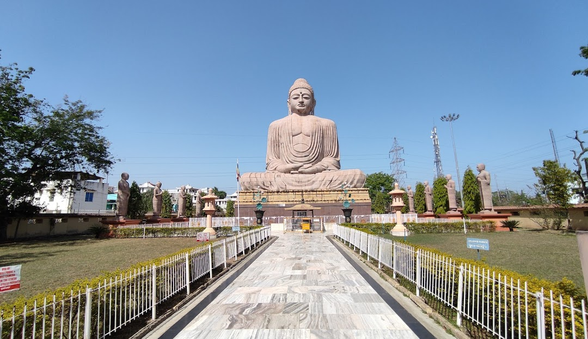
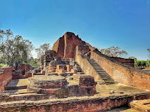
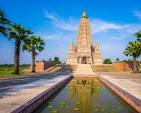
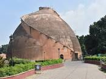

UNESCO Heritage Site
Preserving Culture ,history,and nature of the future generation
Famous tourist place in Bihar
- 1.Bodh Gaya : A major Buddhist pilgrimage destination and a UNESCO World Heritage Site, known for the Mahabodhi Temple where Lord Buddha attained enlightenment.
- 2.Nalanda: Home to one of the world's oldest residential universities, this UNESCO World Heritage Site preserves the ruins of this ancient center of learning.
- 3.Gaya: A significant city for Hindus, with the Vishnupad Temple and its spiritual importance for rituals like Pind Daan.
- 4.Golghar (Patna): A historic grain store with a unique architectural design.
- Agam Kuan (Patna): An ancient well with historical significance, according to the Outlook Traveller.




| S.NO | Place | Festivel |
|---|---|---|
| 1 | India | Holi |
| 2 | Diwali | |
| 3 | chhath puja | |
| 4 | Ganesh ch | |
| 5 |